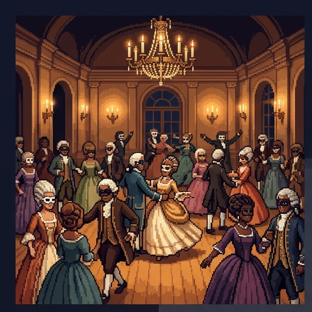
The Masquerade of Silverport
Tonight every guest at the ball wears a mask, and one of them is not a person.
One guest is a clockwork machine. You can't see faces, and you can't hear voices. Can you still tell which guest it is? And if you can't, does the machine think?
Use → (or Next) to advance and reveal points. F = fullscreen.
Welcome to the Masquerade of Silverport. Tonight every guest at the ball wears a mask, and one of them isn't a person. It's a clockwork machine. You can't see faces, and you can't hear voices. Can you still tell which guest it is? And if you can't, does the machine think? Whenever it's your turn, I'll stop and wait for you.
Where You Stand Now
Rate each statement. There are no right answers, and you'll rate them again at the end.
If nobody can tell a machine's answers from a person's, we should say the machine thinks.
A computer program could, in principle, understand a language.
Following the right rules perfectly is enough to understand something.
Today's chatbots understand what they say.
A machine that talks with people should have to say that it is a machine.
Before the dancing starts, tell me where you stand. Rate each of these five statements. There are no right answers, and you'll rate them again at the end. Press Submit when you're done.
Saved. Now, to the ballroom.
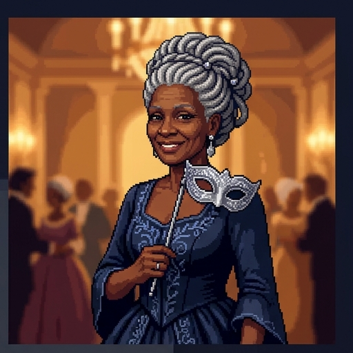
The Host's Challenge
Countess Adaeze Vane taps her glass, and the ballroom goes quiet.
Countess Vane, the host, taps her glass, and the ballroom goes quiet.
- "One of my guests tonight is a machine. A very good one."
- "Masks stay on. Nobody speaks aloud. You may question any guest, but only by passing notes through the curtain."
- "Whoever unmasks the machine wins the evening."
- Her rules make looks and voices useless. All you have to go on is what each guest writes.
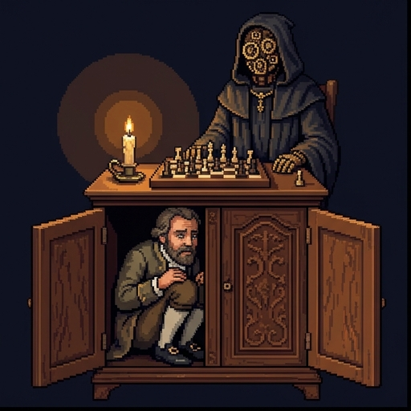
A Machine That Fooled Europe
Machines have fooled people before.
- In 1770 the inventor Wolfgang von Kempelen showed off a chess-playing machine. It beat many of the people who played it.
- Crowds believed a machine was choosing the moves. In fact a human chess player sat hidden inside the cabinet.
- The lesson for tonight: behavior you can see can come from something very different from what you imagine.
- That cuts both ways. A machine might seem to think when it doesn't, and might think when nobody believes it.
Stop asking whether machines think. Ask whether their answers can pass for a person's.
“I propose to consider the question, ‘Can machines think?’”
Turing's Question
The host's game comes from the mathematician Alan Turing, who helped break German codes in the Second World War.
The host's game comes from the mathematician Alan Turing, who helped break German codes in the Second World War.
- In 1950 he asked, "Can machines think?" Then he called that question "too meaningless to deserve discussion."
- Words like "machine" and "think" mean different things to different people. Arguing over definitions would go nowhere.
- So he replaced the question with a game that has a clear result. He called it the imitation game.
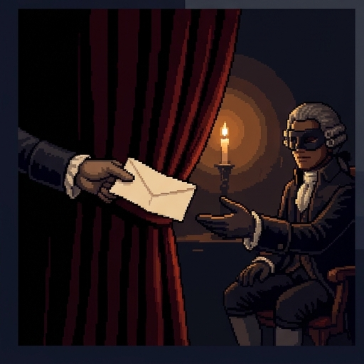
The Imitation Game
Here's how Turing's game works.
- Turing's first version has three players: a man, a woman, and an interrogator in another room who asks questions.
- Answers come back typed, so handwriting and voice give nothing away. The interrogator must work out which player is the woman.
- Then Turing asks what happens if a machine takes the man's place. Will the interrogator guess wrong as often as before?
- The test counts only the written answers. Looks, voice, and what the player is made of are all hidden, just like tonight.
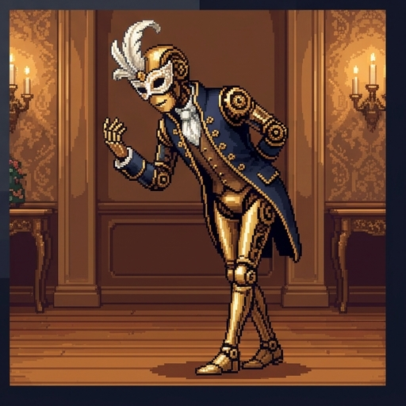
Turing's Imagined Dialogue
Turing's paper includes a sample exchange. He made it up to show the kind of answers a player might give.
Q: Please write me a sonnet on the subject of the Forth Bridge.
A: Count me out on this one. I never could write poetry.
Q: Add 34957 to 70764.
A: (Pause about 30 seconds and then give as answer) 105621.
Turing's paper includes a sample exchange. He made it up, to show the kind of answers a player might give. Asked for a sonnet about the Forth Bridge, the player says: count me out on this one, I never could write poetry. Asked to add two five-digit numbers, it pauses for about thirty seconds, then gives an answer.
- The sum is wrong. The right answer is 105721.
- Elsewhere in the paper, Turing says a machine playing the game would make deliberate mistakes, so its accuracy doesn't give it away.
- So passing the test can mean pretending to be worse than you are.
What Does the Test Measure?
In Turing's game, what can the interrogator actually see? Sort each item into what the interrogator can see and what stays hidden, then press Check answers.
The interrogator can see this
Hidden from the interrogator
The words in each typed reply
Whether each reply answers the question or changes the subject
A wrong number in a typed answer, like a bad sum
The player's voice
What the player looks like
A look inside the player, to check what it is made of
Whether the player really feels anything, apart from what it writes
Turing's Prediction
Turing also made a prediction.
- Turing guessed that in about fifty years, an average interrogator would have no more than a 70% chance of picking out the machine after five minutes of questions.
- He also guessed that by then, people would talk about machines thinking without expecting anyone to object.
- He meant this as a forecast, not as a pass mark. The idea that fooling 30% of judges counts as passing came later.
A few keyword rules were enough to make people feel understood. That alarmed him.
Meet ELIZA
Among the guests is a very old machine. In 1966 the computer scientist Joseph Weizenbaum, at MIT, published a program called ELIZA.
Among the guests is a very old machine. In 1966, the computer scientist Joseph Weizenbaum, at MIT, published a program called ELIZA.
- Its best-known script, later called DOCTOR, plays a therapist who mostly turns your words back into questions.
- It has no knowledge of the world. It looks for keywords and fills in stock replies.
- On the next slide you can talk to a working reconstruction of it, built from the rules Weizenbaum published.
Pass a Note to ELIZA
Your turn. Pass a note to ELIZA. Type something and press Send, or tap a starter line, and try to find a question that gives the machine away. Then turn on Peek behind the mask, to see the rule behind each reply. When you're ready, press Continue.
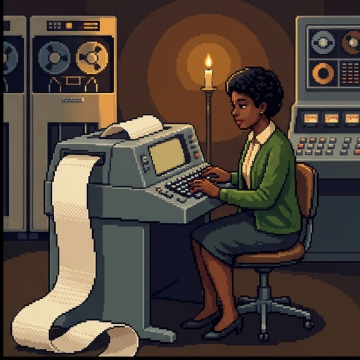
How ELIZA Works
So how does ELIZA do it?
- ELIZA finds a keyword, like "mother" or "always," and picks a stock reply for it.
- It swaps pronouns, so "my problem" comes back as "your problem." Your own words do most of the work.
- People confided in it anyway. His own secretary, who knew it was only a program, began talking to it and soon "asked me to leave the room."
- That pull is now called the ELIZA effect: reading understanding into a machine because its replies fit.
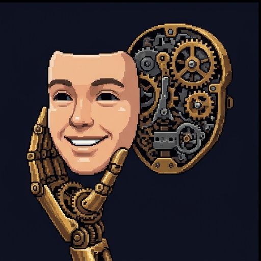
A Mask Within a Mask
Some machines wear a mask within a mask.
- In 2014 a chatbot called Eugene Goostman was entered in a Turing test event in London.
- It played a 13-year-old boy from Ukraine whose first language wasn't English.
- That made its odd answers and gaps in knowledge look like a child's mistakes. A third of the judges took it for a person.
- Critics said it gamed the test by dodging hard questions instead of answering them. A good disguise is not the same as a good mind.
Seventy-Five Years Later
Seventy-five years after Turing's paper, researchers ran his game with today's chatbots.
- In 2025, Cameron Jones and Benjamin Bergen at UC San Diego ran Turing's three-player game: an interrogator, a person, and a chatbot, chatting at once.
- GPT-4.5, told to play a shy young person who knows internet culture and uses slang, was picked as the human 73% of the time.
- That is more often than the real people were picked. ELIZA, in the same study, was picked 23% of the time.
- In Turing's own three-player setup, the machine was picked as the human more often than the humans were. Whether it thinks is a separate question.
Tricks of the Trade
Each of these moves could help a machine pass the test. Is it a disguise, or a real skill? Sort them, then press Check answers.
Disguise: hides what the machine is or what it can do
Skill: really answers the question well, like a right sum
Claiming to be a 13-year-old with shaky English
Changing the subject to avoid a question it can't answer
Adding typos on purpose
Pausing, then giving a wrong sum on purpose
Correctly answering several questions about one story
Explaining a joke the judge has just made up
"But Does It Feel Anything?"
Turing answered a list of objections in the same paper. He called this one the argument from consciousness. It grants that a machine might act as if it feels, and denies that it feels anything.
Turing answered a list of objections in the same paper. He called this one the argument from consciousness. It grants that a machine might act as if it feels, and denies that it feels anything.
- A brain surgeon, Geoffrey Jefferson, said no machine equals a brain until it writes a sonnet because of thoughts and emotions it felt.
- Turing replied: how do you know other people feel anything? You only see what they say and do.
- If you demand more of machines than of people, you would have to doubt everyone but yourself.
- So, Turing wrote, it is usual to have "the polite convention that everyone thinks."
A machine originates nothing. It does what we know how to order it to do.
“The Analytical Engine has no pretensions whatever to originate any thing.”
Lady Lovelace's Objection
Next comes an objection Turing named after Ada Lovelace.
- Ada Lovelace's notes on Charles Babbage's planned Analytical Engine, a mechanical computer, include what is often called the first published program.
- She wrote that the Engine "has no pretensions whatever to originate any thing." It "can do whatever we know how to order it to perform," and nothing it thinks up itself.
- Turing's reply: machines surprise him all the time. And a machine that learns could do things its makers never planned.
"A Machine Could Never…"
Then there's a whole family of objections.
- Turing collected things critics said a machine could never do: be kind, have a sense of humor, fall in love, enjoy strawberries and cream, make a mistake.
- He called these the arguments from various disabilities. As stated, they say a machine can't even do these things.
- His reply: the lists came from the clumsy machines people had seen. He also suspected many were the consciousness objection in disguise.
- Some items have aged badly. Chatbots now joke, and Turing says a machine playing his game would make mistakes on purpose.
Match the Reply
Each line voices one of the objections Turing answered: Jefferson's objection from consciousness, Lovelace's objection, or various disabilities. Sort them by what each line actually claims, then press Check answers.
Consciousness
Lovelace's objection
Various disabilities
"It writes lovely poems, but it feels nothing as it writes them."
"It says 'that hurts' at all the right moments, but nothing ever hurts it."
"It originates nothing. It only does what someone told it to do."
"Everything it does, a programmer put there first."
"You'll never build a machine with a sense of humor."
"You'll never build a machine that makes a mistake."
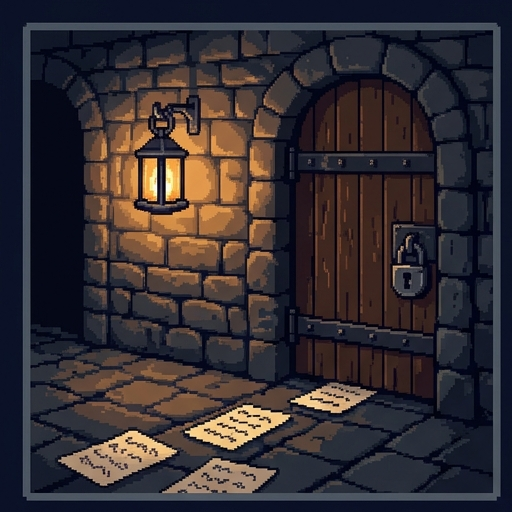
Down to the Cellar
"A second game," says the host, and a steward leads you down to a locked room in the cellar.
A second game, says the host. A steward leads you down to a locked room in the cellar.
- This room is a thought experiment from the philosopher John Searle, published in 1980.
- Slips of paper will come under the door, written in a script you can't read.
- Inside is a rulebook. It tells you which shapes to send back for each slip. It never says what any shape means.
- Searle used Chinese because he couldn't read it. This room uses an invented script, so nobody in class can read it either.
Inside the Room
You're inside the room now, and a slip has come under the door. Find the rulebook row that starts with the same shapes. Use the shape buttons to copy the shapes after the arrow onto your answer slip, then press Push it under the door. After all four slips, press Translate the conversation to see what you said. When you're done, press Continue.
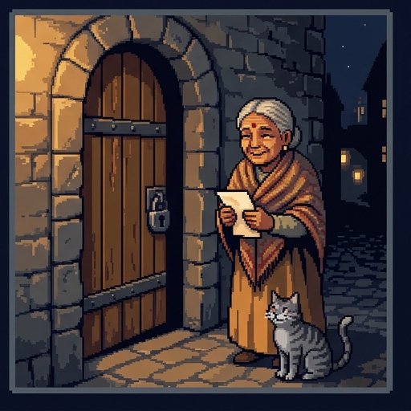
Decision Point: Who Understood?
Outside the door, someone was comforted about her lost cat. So who understood that conversation? This one isn't graded. Pick the answer closest to your view, and read the note that comes with it.
Nobody inside. I only matched shapes.
The room as a whole did, even though I didn't.
I did, in a way. My answers were right.
Only whoever wrote the rulebook.
Running a program, however good, is not the same as understanding.
“Syntax by itself is neither constitutive of nor sufficient for semantics.” (Scientific American, 1990)
Searle's Argument
Here is Searle's argument, in four steps.
- A computer program works by rules about the shapes of symbols. Philosophers call this syntax.
- Understanding requires knowing what the symbols mean. That is semantics.
- In the room you had all the syntax and none of the semantics. Following the rules never gave you the meaning.
- So, Searle concludes, running a program can't be enough for understanding, whatever test it passes.
Two Claims About AI
Searle is careful about what he denies.
Computers can model minds, the way they model weather. Searle has no quarrel with this.
A simulated storm helps you study storms. Nothing gets wet.
A computer running the right program would literally have a mind and understand. This is what the Room attacks.
On this view, the right program would understand the slips, as you did not.
Searle doesn't say machines can't think. "We are precisely such machines," he wrote. What he denies is that running a program is enough.
Searle is careful about what he denies. Weak AI says computers can model minds, the way they model weather. A simulated storm helps you study storms, but nothing gets wet. Searle has no quarrel with that. Strong AI says a computer running the right program would literally have a mind, and understand. That's the claim the Room attacks. And notice: Searle doesn't say machines can't think. We are precisely such machines, he wrote. What he denies is that running a program is enough.
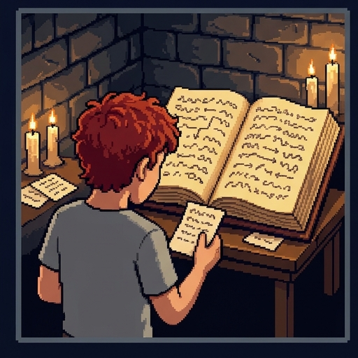
What the Room Shows
So what is the Chinese Room meant to show? Pick the best answer.
That no machine of any kind could ever think
That running the right program isn't enough to understand
That no computer could ever pass Turing's test
That Chinese is too hard for a machine to learn
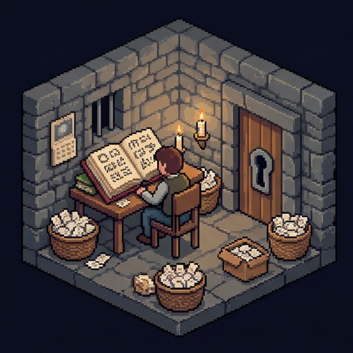
The Systems Reply
In the paper, Searle answers objections he had heard when presenting the argument. One common reply goes like this.
In his paper, Searle answers objections he'd heard while presenting the argument. Here's a common one, called the systems reply.
- Of course the person in the room doesn't understand. The person is only one part of the system.
- The whole system understands: person, rulebook, paper, and all.
- Defenders often add a comparison: your neurons don't understand English either. You do.
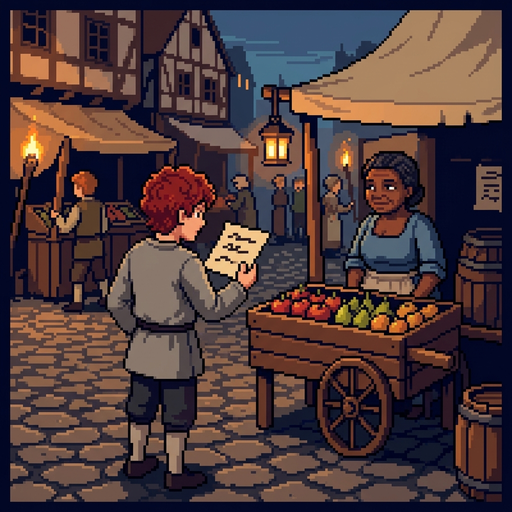
Searle Answers: Swallow the Room
Searle has an answer.
- Searle's reply: let the person memorize the whole rulebook and do every step in their head.
- Now there is no system apart from the person. They are the whole room, and they can walk outside.
- They still don't understand a word of what they answer. So, Searle says, neither did the system.
- Defenders of the systems reply answer that a mind could run inside a person without that person knowing it.
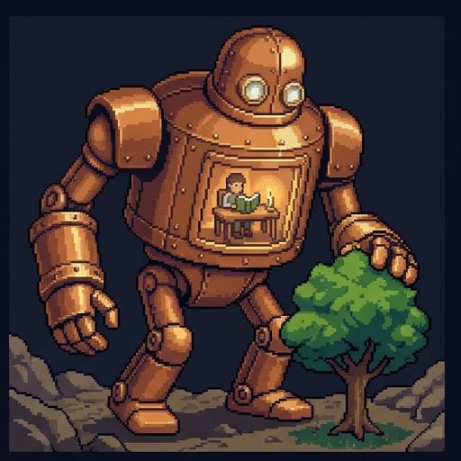
The Robot Reply
A second reply is called the robot reply.
- Another reply: the room is cut off from the world. Put the program in a robot with cameras and arms.
- Now its symbols connect to things it sees and does. Maybe that gives them meaning.
- Searle's answer: the camera's signals reach the person inside as more shapes on more slips.
- The person follows the rules exactly as before. More input is still only more syntax.
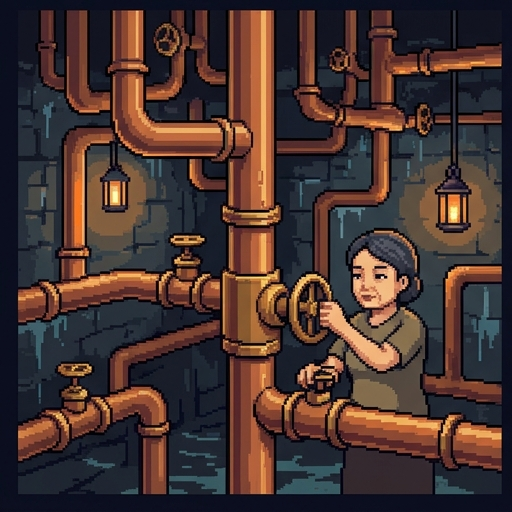
The Brain Simulator Reply
A third is the brain simulator reply.
- A third reply: make the program copy, step by step, what the neurons of a native speaker do.
- If a brain understands, surely an exact copy of its workings does too.
- Searle's answer: run that copy with water pipes and valves, turned by a person following instructions.
- The pipes copy the brain's pattern but not its causal powers, he says. Nothing in them understands.
The Other-Minds Reply
And one more, the other-minds reply.
- One more reply: how do you know that other people understand Chinese? Only from what they say and do.
- So if you credit people with understanding because of their behavior, you should credit the room too.
- This is Turing's polite convention again, now aimed at Searle.
- Searle's answer: the question isn't how we know that someone understands. It's what we are saying is there when they do, and the room doesn't have it.
Where Is the Understanding?
Your turn. Pick a place where understanding might be: the person, the rulebook, the whole room, and so on. For each one, you'll see which reply to Searle, if any, puts it there, and Searle's answer. Try as many as you like, then press Continue.
Name That Reply
Each critic here is answering Searle. Which reply is it: systems, robot, brain simulator, or other minds? Sort them, then press Check answers.
Systems reply
Robot reply
Brain simulator reply
Other-minds reply
"You don't understand, but you plus the book and the paper, taken together, do."
"No single neuron understands English, yet you do. The same goes for the room."
"Put the program in a body with cameras and wheels, so its symbols connect to the world."
"Give the room cameras and arms, so it can see and handle the things its words are about."
"Make the program copy, step by step, what a Chinese speaker's neurons do."
"You only know other people understand from how they act. Judge the room the same way."
A Room Under the Sea
Now, back to the present.
- Today's chatbots learn from vast amounts of text. Do they understand it, or match its shapes?
- In 2020 the linguists Emily Bender and Alexander Koller offered a thought experiment in the spirit of the Room.
- An octopus taps a cable between two islanders, learns to predict one's replies, then cuts the cable and pretends to be them. It never sees what the words refer to.
- When one person needs real help with something new, the octopus has nothing behind its fluent replies.
Decision Point: Must It Unmask?
Whatever machines understand, they now pass for people. Since 2019, California has banned bots that hide what they are in order to sell something or sway a vote. And since August 2026, the European Union has required chatbots to tell people they're talking to an AI. So, should a machine that talks with people always have to say that it's a machine? This one isn't graded. Pick the answer closest to your view.
Whatever machines understand, they now pass for people. Since 2019 California has banned bots that hide what they are to sell something or sway a vote. Since August 2026 the EU has required chatbots to tell people they are talking to an AI.
Yes, always. People have a right to know.
Only when it is selling something or swaying a vote.
No. If it helps, it needn't say what it is.
Where You Stand Now
These are your ratings from the start. Rate each statement again.
These are your ratings from the start of the night. Rate each statement again, then press Submit. If something moved, ask yourself what moved it.
Thank you. The clock is about to strike midnight.
The Ball Is Over
The ball is over. Here's what the night showed.
- Turing: replace "Can machines think?" with the imitation game. Judge a machine by its answers, as we judge people.
- ELIZA and after: passing can be gamed, and people read understanding into fitting replies.
- Searle: a program is syntax, understanding needs semantics, so passing the test isn't enough.
- The replies: the system, the robot, the brain simulator, and other minds, each with Searle's answer.
The masks come off at midnight. Did you find the machine, and did it matter?
For Further Reading
If you'd like to go further, here are some good places to start, each with a note on why it's worth your time. Thanks for playing.
- Alan M. Turing, “Computing Machinery and Intelligence,” Mind 59, no. 236 (1950). Read online. The imitation game, the prediction, and Turing’s replies to his critics.
- Ada Lovelace, translator’s notes to L. F. Menabrea, “Sketch of the Analytical Engine Invented by Charles Babbage” (1843). Read online. Note G holds the line Turing called Lady Lovelace’s objection.
- Emily M. Bender and Alexander Koller, “Climbing towards NLU: On Meaning, Form, and Understanding in the Age of Data,” Proceedings of the 58th Annual Meeting of the Association for Computational Linguistics (2020). Read online. The octopus test, and why form alone can’t give a machine meaning.
- John R. Searle, “Minds, Brains, and Programs,” Behavioral and Brain Sciences 3, no. 3 (1980). Publisher’s page. The Chinese Room, with Searle’s answers to the systems and robot replies.
- David Cole, “The Chinese Room Argument,” Stanford Encyclopedia of Philosophy (rev. 2024). Read online. A guide to the argument, the main replies, and later debate.
About this lesson. Brendan Shea, PhD, wrote this lesson with help from AI tools. Claude (Anthropic) helped draft the text and code and check facts, and the illustrations were made with AI image generators. The narrator's voice is synthetic (Microsoft text-to-speech). The author reviewed everything and is responsible for any errors.